Approach to Inflammatory Polyarthritis
- Count and time it: mono = 1 joint, oligo = 2–3, poly = 4 or more. Acute ≤ 6 weeks, chronic > 6 weeks. Acute polyarthritis: infection (viral!), polyarticular gout, rheumatic fever, drugs, early autoimmune disease. Chronic: RA, connective tissue disease, the seronegative spondyloarthropathies.
- The pattern names the disease: symmetric small + large joints = RA (or SLE/CTD); asymmetric small + large = psoriatic (or gout, reactive); axial + large peripheral = ankylosing spondylitis; weight-bearing joints, DIPs, 1st CMC = OA. DIPs are spared in RA. Course: additive (RA, CTD), episodic (crystals), migratory (rheumatic fever, palindromic, early gonococcal).
- RF (IgM against IgG's Fc) is in 70–80% of RA but also in 5–20% of healthy people, chronic infections (hep C, TB, endocarditis), Sjögren's and lymphoma. Anti-CCP is ~95% specific for RA. Order both once, for diagnosis, never to monitor; seropositive = more aggressive.
- ANA is positive in up to 30% of normal people: a negative ANA rules out lupus/CTD, a positive one doesn't rule it in. Don't reflexively order ANA and RF for joint pain. Lupus flare: anti-dsDNA up, C3/C4 down.
- Synovial fluid WBC: < 200 normal, < 2,000 non-inflammatory, > 2,000 inflammatory (> 50% PMNs), infectious > 75% PMNs with a positive Gram stain/culture. X-ray: inflammatory = periarticular osteopenia, symmetric narrowing, marginal erosions; degenerative = osteophytes, subchondral sclerosis and cysts, asymmetric narrowing.
Learning Objectives
- Determine a differential for oligo- and polyarthritis, including seronegative and seropositive inflammatory arthropathies; distinguish acute from chronic polyarthritis.
- Compare the epidemiology, clinical features and joint distributions of RA and the seronegative spondyloarthropathies; identify their extra-articular manifestations.
- Describe RF, ANA, ANCA, ESR, CRP and HLA-B27: when to order them, when not to, and the expected results in RA, SLE, the seronegative arthropathies, JIA and GCA/PMR.
- Outline DMARD and biologic treatment, and compare adult and pediatric strategies. (You won't be asked to choose between specific biologics, only when they're considered.)
Three recordings (61 min) by Dr. J. Jiang (rheumatology, St. Joseph's): classification, then the history and extra-articular features, then investigations and a brief look at management. Several objectives are shared with later modules (seronegative arthritides, connective tissue disease, rheumatology investigations and treatment). Children: 11.4.
Classification
Inflammatory or not, acute or chronic, how many joints.
Three Ways to Classify Arthritis

| Inflammatory | Non-inflammatory | |
|---|---|---|
| What | Synovitis: inflamed synovium makes more fluid (swelling), with warmth, pain, stiffness; redness mostly in infection or crystals (not usually RA) | Degenerative: cartilage breakdown from repeated structural trauma (bone, menisci, ligaments), ending bone on bone |
| Causes | The immune system attacks itself (autoimmune: autoantibodies, immune-complex deposition, molecular mimicry), or attacks something foreign: infection (bacteria, viruses, fungi, mycobacteria) or crystals (urate = gout, calcium pyrophosphate = pseudogout) | Primary OA; secondary: trauma, avascular necrosis, neuropathic (Charcot) joints, recurrent hemarthrosis, hemochromatosis. Untreated inflammatory arthritis is itself a secondary cause of OA. |
| Joints | Depends on the disease (below) | Any number; weight-bearing joints, spine, hands and feet |
![Diagram titled Inflammatory polyarthritis classification: acute (under 6 weeks) polyarticular gout, infectious and post-infectious arthritis including viral, rheumatic fever, drug reactions such as serum sickness, early RA, CTD, vasculitis or seronegative arthritis; chronic (over 6 weeks) rheumatoid arthritis, connective tissue disease, reactive arthritis, seronegative spondyloarthropathy, palindromic rheumatism, systemic vasculitis, polyarticular JIA, adult onset Still's disease, sarcoidosis, drug reactions; note that many forms of acute polyarthritis progress to chronic if autoimmune.](../../../../assets/images/week-11/polyarthritis/acute-chronic.jpg)
| Acute (< 6 weeks) | Chronic (> 6 weeks) |
|---|---|
| Polyarticular gout (severe gout with very high urate can mimic RA) Infectious and post-infectious, including viral Rheumatic fever (after strep, in children) Drug reactions (serum sickness) Early RA, CTD, vasculitis or seronegative arthritis | Rheumatoid arthritis Connective tissue disease: SLE, myositis, Sjögren's, scleroderma, MCTD Reactive arthritis; seronegative spondyloarthropathies (psoriatic, enteropathic) Palindromic rheumatism; systemic vasculitis; polyarticular JIA into adulthood; adult-onset Still's; sarcoidosis; drug reactions |
Forming the Differential
Every inflammatory arthritis is a clinical diagnosis: history, then extra-articular features, then investigations. No single test makes it.
Temporal Pattern
| Pattern | Think of | |
|---|---|---|
| Onset | Acute: peaks in hours to days | Crystals, bacterial infection |
| Insidious: builds over weeks to months | RA, CTDs, OA | |
| Course | Episodic: comes and goes, attacks lasting days | Crystal arthropathy |
| Migratory: 1–2 joints for a few days, settle, then new joints | Palindromic rheumatism, rheumatic fever, early gonococcal arthritis | |
| Additive / progressive: more and more joints over time | RA, CTDs, OA |
The module's knowledge check: right wrist for 3 weeks, then the right 2nd–5th MCPs, then 6 weeks later the left knee and wrist = chronic (≥ 9 weeks), additive: the common RA pattern.
Distribution: Which Joints, and How
Small joints: MCP, PIP, DIP, MTP, IP. Medium/large: shoulders, elbows, wrists, hips, knees, ankles. Axial: spine, sacroiliac.

| Joint | Favoured by |
|---|---|
| Axial (spine, SI joints) | Ankylosing spondylitis; prominent SI joints = think spondyloarthropathy |
| 1st CMC (base of thumb) | OA (inflammatory arthritis usually spares it) |
| 1st MTP | Gout, OA |
| DIPs | OA, psoriatic arthritis; spared in RA and other CTDs |
| MCPs | RA, CPPD (pseudogout) |
| Wrists, shoulders, elbows, ankles | RA, CPPD, psoriatic arthritis |
| Type of involvement | What it is |
|---|---|
| Synovitis | Joint swelling |
| Tenosynovitis | Inflammation of a tendon and its synovial sheath |
| Dactylitis | A sausage digit (the whole finger or toe swells): seronegative, especially psoriatic |
| Enthesitis | Inflammation where tendon inserts into bone (e.g. Achilles): seronegative |
| Bursitis | Anyone, but more with arthritis |
| Deformities | Nodules, Heberden's (DIP) and Bouchard's (PIP) nodes, swan-neck, boutonnière, ulnar deviation, MCP subluxation |
Risk Factors and Triggers
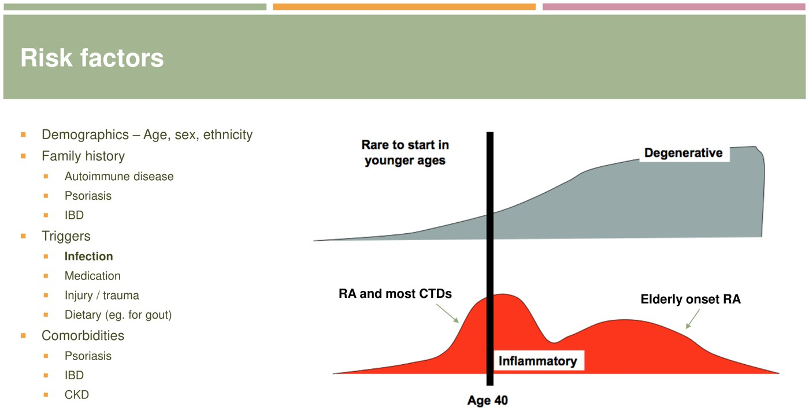
Age of onset: OA is rare young; RA and CTDs peak around 40, with a second, elderly-onset RA wave. From the deck.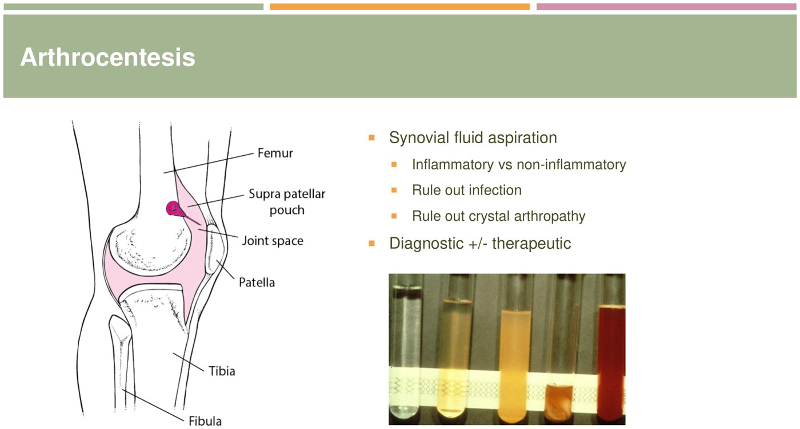
Arthrocentesis: fluid from clear to cloudy to pus to blood. From the deck.| Factor | Examples |
|---|---|
| Demographics | Age, sex, ethnicity. Symptomatic OA is rare under ~50 (unless an inflammatory disease set it up); RA and most CTDs peak around 40 (can start in the 20s); elderly-onset RA at 60–80 |
| Family history | Autoimmune disease, psoriasis, IBD: these cluster |
| Triggers | Infection; medications (serum-sickness-like reactions); injury (OA); diet (gout) |
| Comorbidities | Psoriasis, IBD (spondyloarthropathies); CKD and hyperuricemia (gout) |
Seen much more since COVID. Polyarthritis during the infection or weeks after it (post-viral). Common culprits: hepatitis A, B, C; HIV, CMV, EBV; parvovirus; chikungunya; influenza; COVID-19. Usually self-limited: supportive care (rest, ice, NSAIDs), and a short course of prednisone if severe. The module's knowledge check: COVID, parvovirus, hepatitis B, HIV and influenza can all cause it.
Extra-articular Manifestations
| System | Manifestations |
|---|---|
| Eye | Uveitis, scleritis, episcleritis, sicca |
| Mouth | Aphthous ulcers |
| Skin (the most common and useful) | Malar rash, photosensitive rash, Gottron's, vasculitic rash, erythema nodosum, livedo reticularis, Raynaud's, tophi, nodules, keratoderma blennorrhagicum, skin thickening, sclerodactyly, calcinosis, digital ulcers |
| Nails | Psoriasis, pitting, psoriatic nail dystrophy |
| Lungs | ILD, pleural effusions, nodules |
| Heart, kidney | Pericarditis, myocarditis; glomerulonephritis, interstitial nephritis |
| GI, GU | Esophageal dysmotility, IBD; urethritis, genital ulcers |
| Blood, constitutional | Hemolytic anemia, thrombocytopenia, lymphopenia; lymphadenopathy, fevers |
| Disease | Look for |
|---|---|
| Rheumatoid arthritis | Rheumatoid nodules (extensor surfaces), ulnar deviation and MCP subluxation, episcleritis/scleritis, pulmonary nodules |
| Psoriatic arthritis | Skin psoriasis, nail pitting and dystrophy (onycholysis, yellowing), dactylitis, enthesitis (Achilles), uveitis |
| Reactive arthritis | Conjunctivitis, urethritis, arthritis (“can't see, can't pee, can't climb a tree”; not everyone has all three); vesicopustular skin lesions |
| Gout | Tophi (ear, fingers, toes, elbows), podagra, olecranon bursitis |
| Osteoarthritis | Heberden's (DIP) and Bouchard's (PIP) nodes |
| SLE | Malar (butterfly) rash, discoid lupus (scarring), oral ulcers, subacute cutaneous rash on sun-exposed chest and arms |
| Dermatomyositis | Heliotrope (eyelids), shawl sign (upper back) and V sign (anterior chest), Gottron's papules (over the knuckles), mechanic's hands (cracked radial fingers), holster sign (lateral thighs) |
| Scleroderma | Sclerodactyly (thick skin, contracted fingers), dilated nail-fold capillary loops, Raynaud's (demarcated pallor on cold), calcinosis |
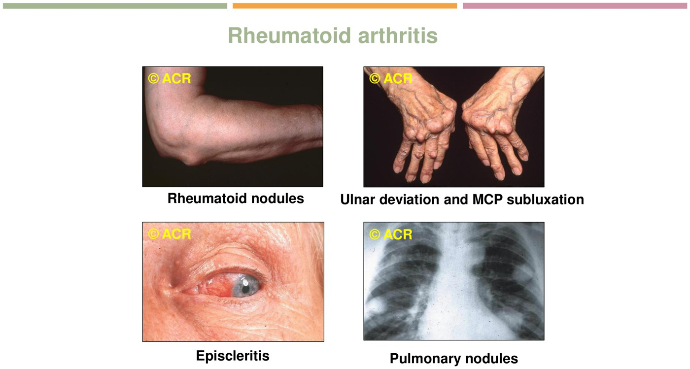
RA: nodules, ulnar deviation, episcleritis, lung nodules. © ACR, via the deck.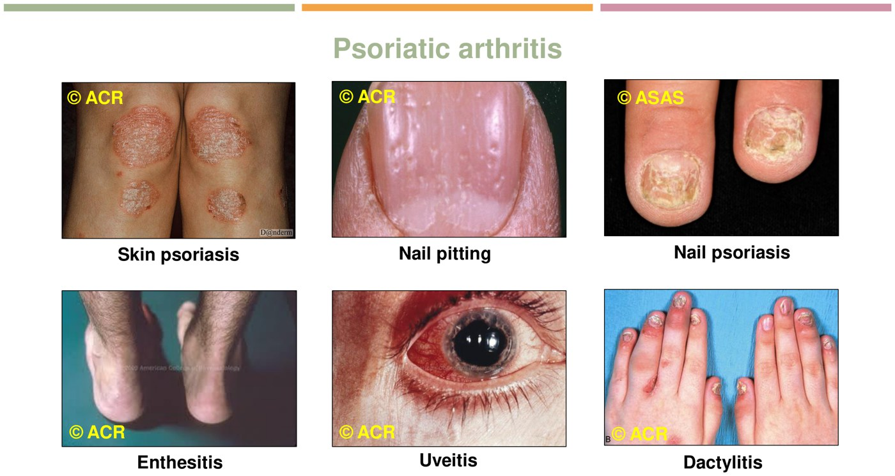
Psoriatic arthritis: plaques, pitting, enthesitis, uveitis, dactylitis. © ACR/ASAS, via the deck.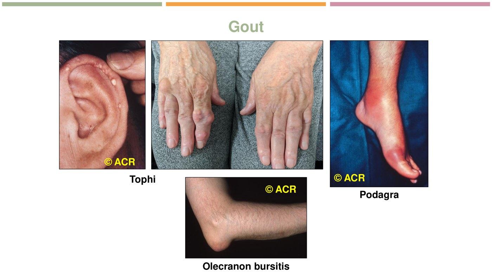
Gout: tophi, podagra, olecranon bursitis. © ACR, via the deck.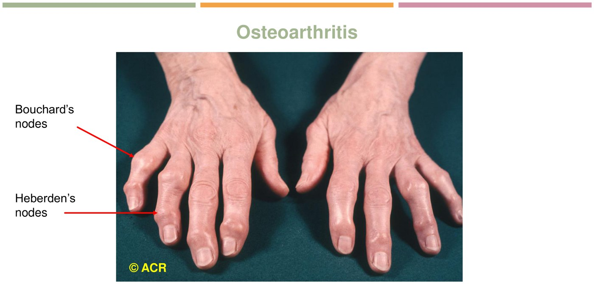
OA: Heberden's (DIP) and Bouchard's (PIP). © ACR, via the deck.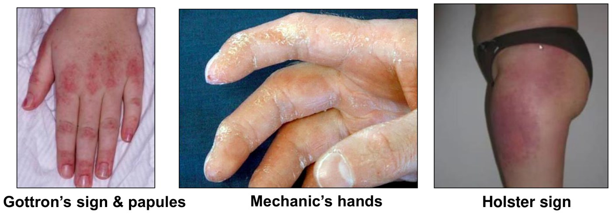
Dermatomyositis: Gottron's, mechanic's hands, holster sign. From the deck (the face photos are left out).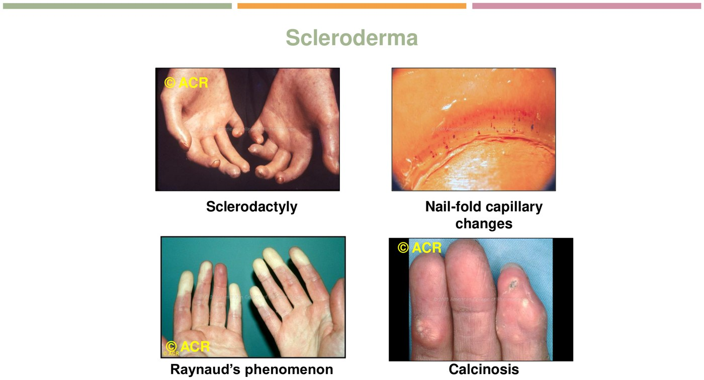
Scleroderma: sclerodactyly, nail-fold capillaries, Raynaud's, calcinosis. © ACR, via the deck.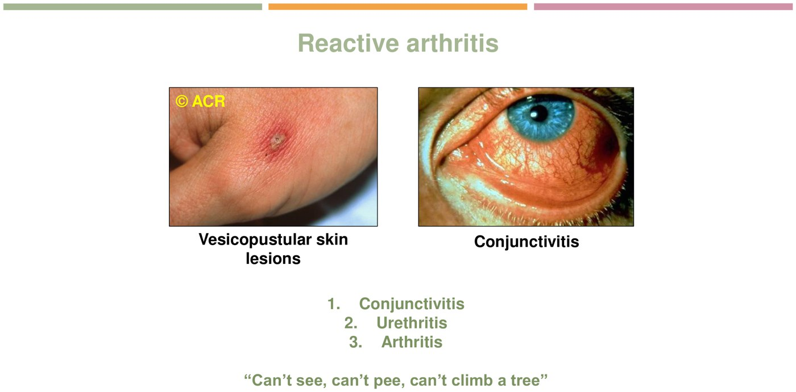
The knowledge check: of nail psoriasis, Achilles enthesitis, dactylitis, uveitis and malar rash, only the malar rash (SLE) isn't a psoriatic arthritis feature.
Investigations and Management
Labs, serology, synovial fluid, x-rays.
Routine and Special Labs
| Test | What it tells you |
|---|---|
| CBC + differential | ↓ Hb: anemia of chronic disease (normocytic); ↑ platelets: inflammation; ↓ platelets or WBC: autoimmune cytopenia (e.g. lupus) |
| Creatinine | AKI from glomerulonephritis or vasculitis; drug clearance (NSAIDs, some DMARDs) |
| AST, ALT | Drug clearance; autoimmune hepatitis with some CTDs |
| CRP | The marker used; is this truly inflammatory, is it flaring? |
| ESR | Not routinely ordered: nonspecific, raised by many things |
| Uric acid | Gout |
| Viral serology | Parvovirus, EBV, Lyme, hepatitis B and C, HIV, COVID-19 |
| HLA-B27 | Ankylosing spondylitis (less useful for other spondyloarthropathies) |
| CPPD workup | Underlying causes: hemochromatosis, hyperparathyroidism, hypothyroidism |
The knowledge check: active inflammation = thrombocytosis, normocytic anemia, raised CRP and ESR. Thrombocytopenia is not a marker of inflammation (it's an autoimmune cytopenia, e.g. lupus).
RF, Anti-CCP, ANA and ENA
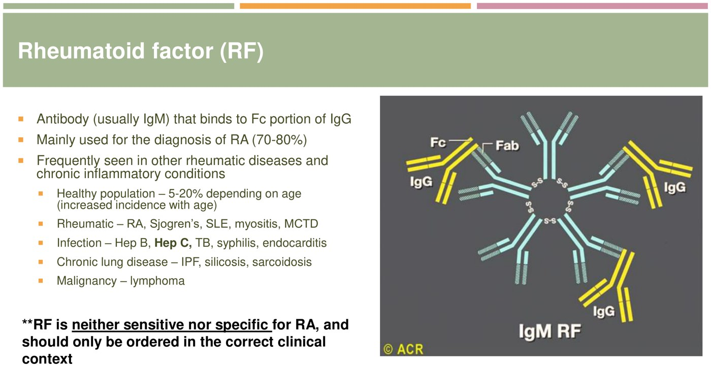
RF: an IgM that binds the Fc of IgG. From the deck.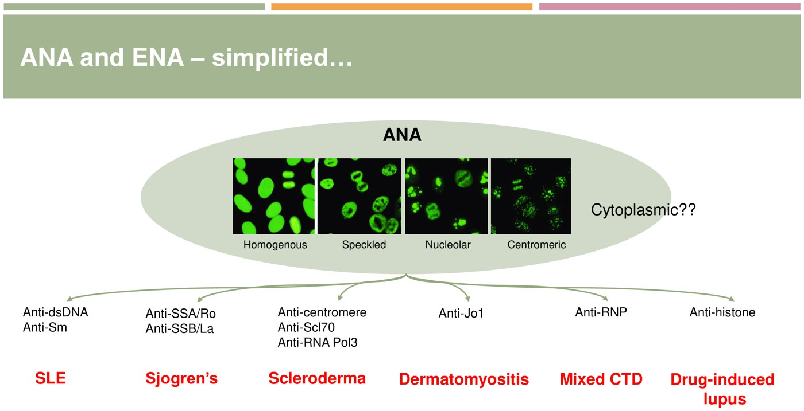
ANA patterns → ENA antibodies → disease. From the deck.| Test | Key facts |
|---|---|
| Rheumatoid factor | Positive in 70–80% of RA. Also in 5–20% of healthy people (more with age); rheumatic (Sjögren's, SLE, myositis, MCTD); infection (hep B, hep C, TB, syphilis, endocarditis); chronic lung disease (IPF, silicosis, sarcoidosis); lymphoma. Neither sensitive nor specific: order only in the right context. |
| Anti-CCP | Antibodies to citrullinated proteins (arginine converted to citrulline after translation). ~95% specific for RA; separates RA from other causes of a positive RF; often present years before the arthritis. |
| ANA | Antibodies to nuclear contents; used for SLE and other CTDs. Positive in up to 30% of normal people, plus RA, ILD, autoimmune thyroid and liver disease, PBC, IBD, MS, infections (TB, viral hepatitis, HIV, EBV, CMV, parvovirus), lymphoma and leukemia, after vaccines. Positive doesn't rule CTD in; negative typically rules it out. |
| ENA | Ordered after a positive ANA to name the antigen (figure above) |
Order once, for diagnosis, when you suspect RA: truly swollen joints with raised inflammatory markers. Don't repeat them to monitor: titres don't predict flares or treatment response. They do carry prognosis: seropositive patients tend to have more aggressive disease (more joints, erosions, extra-articular features). Don't order ANA and RF reflexively for joint pain; build the differential first.
Lupus activity: in a flare, anti-dsDNA rises and C3 and C4 fall (complement is consumed in the cascade). Seroconcordant = the markers move as expected in a flare; serodiscordant = they don't.
The knowledge checks: a positive ANA alone doesn't diagnose SLE (it's clinical: compatible symptoms, exam and a positive ANA). RF can be raised in a healthy older person, hepatitis C and CTDs, but not acute rheumatic fever (a transient post-strep illness that doesn't lead to RA).
Synovial Fluid
Arthrocentesis (usually the knee, at the bedside, 5–10 minutes) tells inflammatory from non-inflammatory, rules out infection and crystals, and can be therapeutic (draining a tense effusion relieves pain). The WBC count is the key number.
| Normal | Non-inflammatory | Inflammatory | Infectious | |
|---|---|---|---|---|
| Colour | Clear | Yellow | Yellow | Yellow-green |
| Clarity | Transparent | Transparent | Cloudy | Cloudy |
| Viscosity | High | High | Moderate | Low |
| WBC (/mm3) | < 200 | < 2,000 | > 2,000 | > 2,000 |
| % PMNs | < 25% | < 25% | > 50% | > 75% |
| Crystals | None | None | Possible | None |
| Gram stain, culture | Negative | Negative | Negative | Positive |
The > 2,000 line separates inflammatory from not; septic joints usually run far higher (> 20,000–50,000; see 11.1). Dr. Jiang's own clinic example: a cloudy, slightly amber knee tap with ~5,800 WBC, which turned out to be gout.
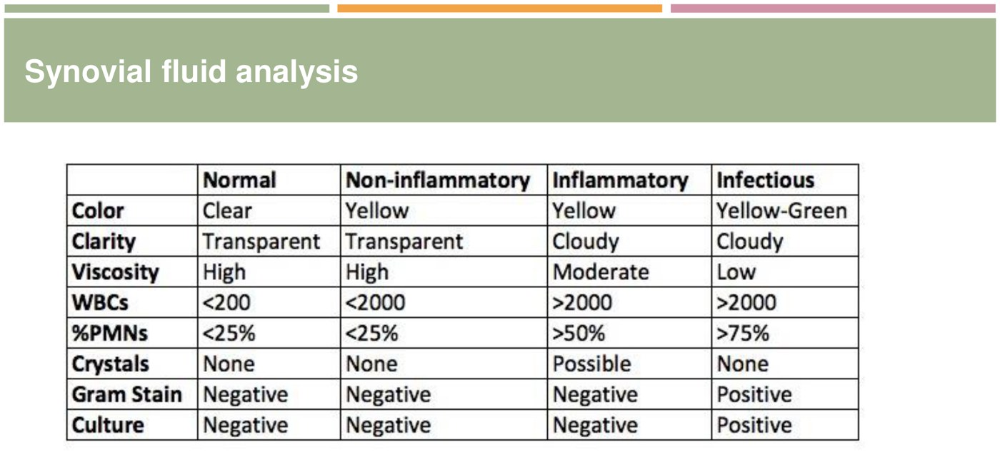
The synovial fluid table. From the deck.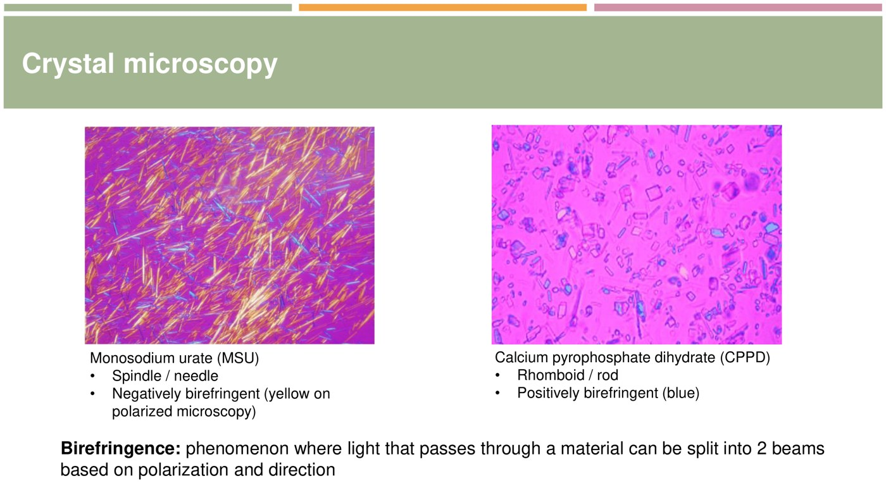
Urate (needles, negative, yellow) vs CPPD (rhomboid, positive, blue). From the deck.X-rays
Not very helpful in acute polyarthritis: damage takes time (sometimes years). And not all inflammatory arthritis erodes: yes in RA, psoriatic arthritis and other spondyloarthropathies, gout, septic arthritis; no in SLE and Sjögren's, even after months untreated.
When x-rays help: a baseline before treating an autoimmune arthritis; telling inflammatory from degenerative in long-standing symptoms; telling one inflammatory arthritis from another; checking for progressive damage despite treatment (time to escalate?).
| Inflammatory | Degenerative |
|---|---|
| Periarticular osteopenia | Osteophytes |
| Soft tissue swelling: periarticular, fusiform | Subchondral sclerosis |
| Joint space narrowing: symmetric (the whole joint is inflamed) | Subchondral cysts |
| Erosions (marginal) | Joint space narrowing: asymmetric |
| Periostitis (new bone, e.g. psoriatic) | Erosions only in erosive OA (a particular look) |
| Deformities: subluxation, deviation | Deformities: deviation from extra bone growth |
The knowledge check: periarticular erosions separate inflammatory from degenerative; osteophytes, subchondral sclerosis and asymmetric narrowing are OA. Joint distribution matters too.
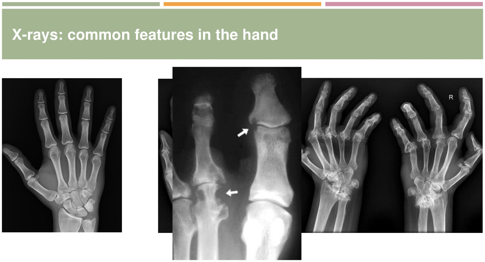
Normal (left), gout (middle), RA (right). Gout's erosions are well defined, “rat-bite”, with overhanging edges (arrows); RA has obliterated joint spaces, subluxation and erosions everywhere. The osteoarthritis hand Dr. Jiang describes (carpal sclerosis, narrowing and osteophytes at the finger joints) sits hidden behind the gout image on the slide. From the deck.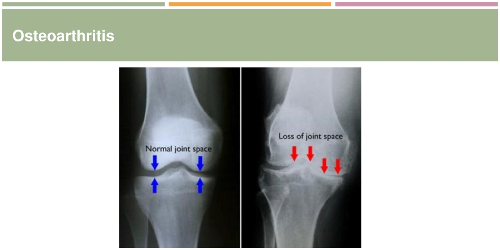
Knee OA: medial joint space lost (asymmetric), subchondral sclerosis. From the deck.Management, Briefly
| Non-drug | Drugs |
|---|---|
| Gentle physiotherapy, stretching and strengthening; cool or warm compresses; rest | Analgesia: acetaminophen, NSAIDs Corticosteroids: prednisone, IM methylprednisolone (Depo-Medrol), joint injections (large joints: shoulders, wrists, knees, ankles) DMARDs if RA or lupus is suspected (below) Gout: colchicine, NSAIDs, steroids; long term allopurinol or febuxostat Pseudogout: colchicine, NSAIDs, steroids (weak evidence for prophylaxis) |
| DMARD class | Examples |
|---|---|
| Conventional synthetic (csDMARDs) | Methotrexate, hydroxychloroquine, sulfasalazine, leflunomide |
| Targeted synthetic (tsDMARDs) | Tofacitinib (a JAK inhibitor) |
| Biologics (bDMARDs) | Adalimumab (anti-TNF), tocilizumab (anti-IL-6) |
Disease-specific treatment comes in the later modules.
Built from Dr. J. Jiang's “Approach to Inflammatory Polyarthritis” deck, its three recordings and the module's eight knowledge checks. Lupus and dermatomyositis face photographs are left out and described in the table. Notes: Dr. Jiang defines oligoarthritis as 2–3 joints and polyarthritis as 4 or more; JIA classification (11.4) uses ≤ 4 vs ≥ 5. The synovial fluid table's inflammatory cut-off (> 2,000) differs from the septic-arthritis cut-offs in 11.1 (> 20,000 / > 50,000); they answer different questions. The recordings' auto-captions are badly garbled in places (e.g. “sinusitis” for synovitis); the page follows the slides.